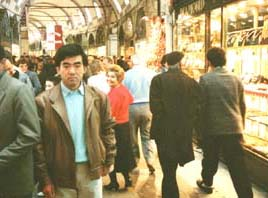

７９．「値切りシリーズ１」（トルコ、写真有）
革製品の本拠地がイタリアのフィレンツェであることは最近になって知った。それまでは何処か分からずスペイン辺
りで皮ジャンを買おうかなと考えていた。最後の帰国途上でスペインによる事にしたのでここで皮ジャンを買って帰る
つもりであった。
カイロからトルコ航空に乗りイスタンブールに向かう。５月初めであるから季節は良いと思っていたらその日は寒か
った。寒すぎて出歩けないのである、日曜日という事も有ってどこもお休み。ぶらぶらしその日を過ごす。翌日も余り
の寒さで皮ジャンを買う事にした。そしてバザールに入る、色々な物が売っている。ここが有名なバザールである、迷
子になりそうな位迷路みたいになっている。
皮ジャンを売っている店を探し値段を見る。安いので８千円、高いのが２万６千円位である。８千円のは皮が硬く黒
が多い、２万６千円は茶が多く皮は柔らかい。この２種類しかない、値段がやけに思ったより安いのでちょっと心配で
は有ったが、余りの寒さで買うしかない、適当な店に入り交渉を始める。
コツは十分学んだつもりであるがエジプトでの話、ここはトルコ、イスタンブール、通じるかどうかちょっと心配であ
った。
１．まず、絶対に買うそぶりを示す
２．お金は十分あることを示す
３．初めは半分くらいから（慣れない場合であるが）
４．けちをつけて引き下げる
１、２は問題なくクリアーできる。３、はもう慣れているから２万６千円の物を８千円から始める事にした。
後はどうやってけちを付けるかである、忘れてならないのはこの時に絶えず買いたい事を示していることである。
値切りを始めると流石に８０００円では剣もほろろに取り合ってくれない。８０００円のはこちらの黒皮ジャンである
と来る。ここで簡単には負けず、茶色の皮ジャンをしげしげと欲しそうに見て交渉を再開する。兎に角何かケチを付け
て値下げ交渉である。応酬を繰り返す事約１時間でお互い歩みより１万８千円で合意した。

帰国して気が付いたのだが、ファスナーの歯が１個欠けていた。これには全く気がつかなかった。そして裏地が少し
大きく落ち着かない、ちょっと失敗であった。そして安物らしく十数年使ったら皮が少し擦り切れ始めている。多分高
い皮ジャンはそんな事がないのではないかと思う・・・・・・・・・が気に入った思い出の品として毎年愛用している。
２００１年１０月 ８日 記
|